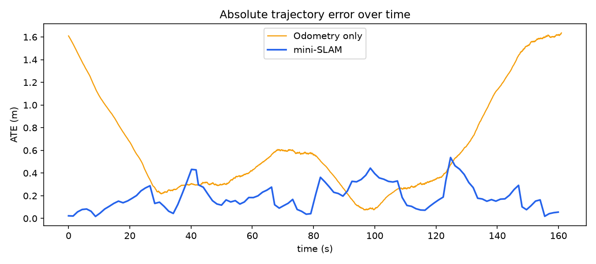
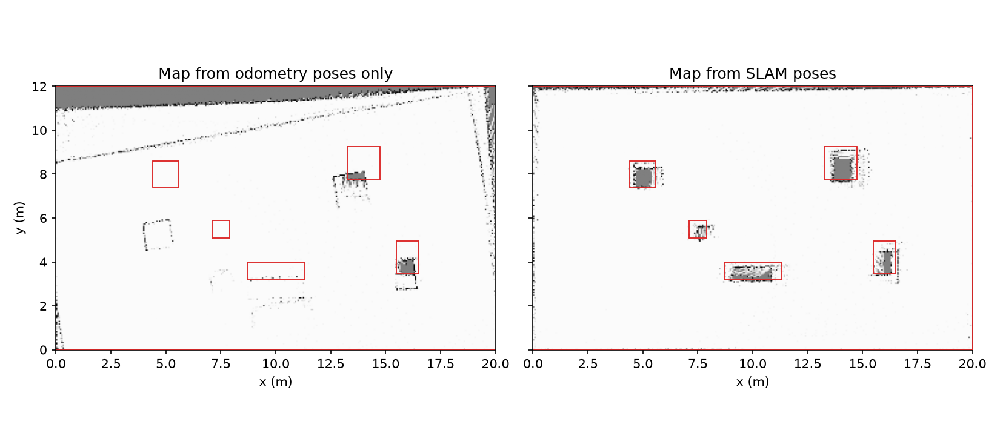

8.1全流程鸟瞰
8.2关键帧：让后端不必处理每一帧
20 Hz × 161 s = 3220 帧，但相邻帧之间机器人只挪了 2.75 cm——处理每一帧是浪费。 关键帧（keyframe）机制：只有当机器人相对上一个关键帧走够 0.8 m 或转够 45° 才收一帧， 3220 帧压缩成 110 个关键帧，后端负担缩小 30 倍，而信息几乎无损（相邻帧扫描本来就大量重叠）。
run_slam.py —— 关键帧筛选
kf_step = 0.8 # 关键帧间隔（米）
kf_idx = [0]
for k in range(1, len(odom_traj)):
d = odom_traj[k, :2] - odom_traj[kf_idx[-1], :2]
turn = abs(wrap(odom_traj[k, 2] - odom_traj[kf_idx[-1], 2]))
if np.hypot(*d) >= kf_step or turn > np.deg2rad(45):
kf_idx.append(k)两个参数的取舍：间隔太大（>1.5 m）时两帧重叠过少，ICP 对不上； 太小（<0.4 m）时节点数膨胀、图优化变慢，而精度几乎不涨。0.8 m ≈ 量程的 9%、 帧间重叠率 >85%，是被 Cartographer 等系统验证过的甜点区。
8.3前端：运动边 + 初值策略
每对相邻关键帧做一次 ICP。这里有个决定成败的细节——坐标系约定： ICP 必须在"参考帧的机体坐标系"内进行，返回的才是"i→j 的相对位姿"：
run_slam.py —— 运动边生成
for a in range(1, n_kf):
T_init = inv(T_odom[a-1]) @ T_odom[a] # 里程计相对位姿做初值
ref = scan_to_local(scans[kf_idx[a-1]]) # 上一帧：机体系点云
cur = scan_to_local(scans[kf_idx[a]]) # 当前帧：机体系点云
T, rmse, _ = icp(ref, cur, init_pose=matrix_to_se2(T_init))
info = info_bad if rmse > 0.25 else info_odom # 差边降权
pg.add_edge(a-1, a, matrix_to_se2(T), info)
chain.append(chain[-1] @ se2_exp(matrix_to_se2(T))) # 链式估计本课程开发中真实踩过的三个坑（写出来防止你重蹈）
- 把"修正量"当"相对位姿"：如果先把 cur 预变换再以 0 为初值调 ICP， 返回的 T 只是修正量，z ≈ 0 —— 图里所有边都退化成"没动"。修复：把初值交给 icp() 内部， 直接用返回值。
- 闭包缓存了旧数组引用：航点跟随器在创建时缓存了
robot.pose的引用， 而运动学积分是"重新绑定新数组"——控制器永远看到起点，机器人一路冲出房间。 - 回环搜索的哨兵值：
last_loop_a = -99配上错误的比较方向， 导致除第一帧外永远跳过回环搜索。调试SLAM 前端时，先打印"回环候选有几个、每个的 RMSE 是多少"。
8.4评估：ATE 指标
怎么给 SLAM 打分？标准答案是绝对轨迹误差（Absolute Trajectory Error, ATE）：
$$
\mathrm{ATE}_i = \big\|\, R\,\hat{\mathbf{p}}_i + \mathbf{t} - \mathbf{p}_i^{gt}\,\big\|,
\qquad
\mathrm{RMSE} = \sqrt{\tfrac{1}{N}\sum_i \mathrm{ATE}_i^2}
$$
注意 $(R, \mathbf{t})$ 这一步：SLAM 没有上帝视角，它建出的"世界原点"可以和真值差一个全局刚体变换。 评估前先用 Umeyama 对齐（第 2 章 SVD 闭式解的又一化身）把估计轨迹刚性对齐到真值， 再逐点算距离。这和 evo、TUM 基准的做法一致。


8.5实把玩：网页版 mini-SLAM
下面这台"浏览器机器人"运行着与 run_slam.py 完全相同的前端 + 后端
（ICP、关键帧、回环检测、数值雅可比 GN——全部用 JavaScript 重写了一遍）。
三个面板：真值（上帝视角，算法拿不到）、纯里程计、mini-SLAM 实时建图。
交互 · mini-SLAM 实时运行
盯住第 ③ 面板：每次回环时地图会"啪"地绷直
真值轨迹
里程计
SLAM 关键帧位姿
回环边
8.6调参秘籍（抄作业表）
| 参数 | 课程值 | 调大 → | 调小 → |
|---|---|---|---|
| 关键帧间隔 | 0.8 m | 节点少跑得快，重叠少 ICP 易失败 | 精度冗余，图大变慢 |
| ICP 修剪比 | 0.8 | 容忍更多噪声，动态物体更稳 | 锐利但对坏点敏感 |
| 运动边信息矩阵 | diag(400,400,1e4) | 更信 ICP、少信回环 → 漂移保留 | 地图更"软"，回环更容易掰弯它 |
| 回环 RMSE 门槛 | 0.12 m | 回环更少、更保守（漏真回环） | 更多回环、更易出错回环 |
| 回环候选半径 | 1.5 m | 候选更多、计算更贵 | 可能错过真回环（漂移大于半径时） |
| l_max（log-odds 饱和） | 4.0 | 信仰更坚定，难自我修正 | 地图"水性杨花"，噪声残留多 |
破坏性实验清单（强烈推荐全部做一遍）
- 注释掉所有回环边 → 观察"鬼影回归"
- 里程计噪声 ×3 → 观察 ICP 初值失效、低质量边暴增（看日志）
- 把 GN 的
se2_exp换成直接加 → 观察优化发散 - 把 ICP 初值改成 0（不用里程计）→ 局部极小暴雷
- 激光噪声 σ 从 0.02 调到 0.10 → 找到"地图还能看"的极限
检查点 · 离开本章前
- 能画出 8.1 的流水线图并说出每块输入输出
- 理解关键帧机制的取舍，知道 0.8 m 从哪来
- 会用 ATE（含 Umeyama 对齐）给轨迹打分
- 在网页仿真里看过至少 3 次回环绷紧的瞬间
python run_slam.py输出的所有数字都能解释
练习 1 · 在线 vs 离线
课程为了简化，位姿图优化只在回环触发/跑完两圈时执行。
把
runPGO() 挪到每 10 个关键帧执行一次（在线平滑），
对比 ATE 曲线：在线版误差全程更低，但 CPU 占用升高。真实系统在两者间权衡
（Cartographer：分支定界回环 + 每 5 s 一次全图优化）。练习 2 · 把 ATE 换成 RPE
相对位姿误差（RPE）衡量"相邻帧位移/转角"的精度（不含全局对齐），
对里程计评估更有意义。实现：对相邻两帧估计位姿做差 $\hat T_k^{-1}\hat T_{k+1}$ 与真值差对比，
平移/旋转分开报 RMSE。你会发现 SLAM 的 RPE ≈ ICP 单帧精度（~2 cm），
而里程计 RPE ≈ 3 cm——差在"重置"机会而不是单帧精度。